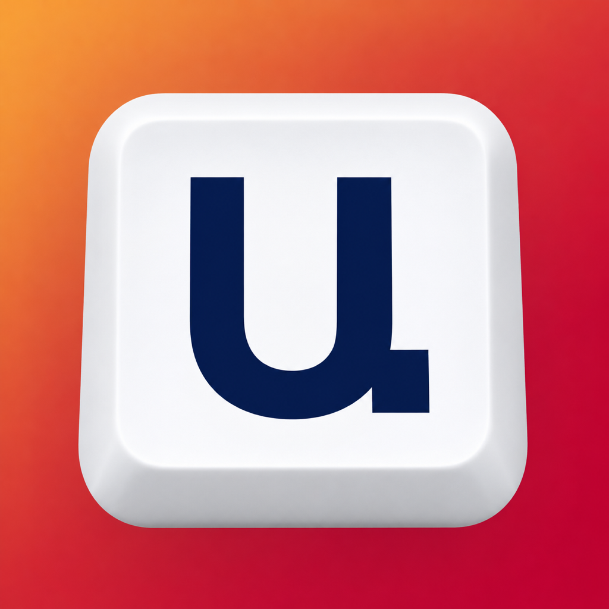
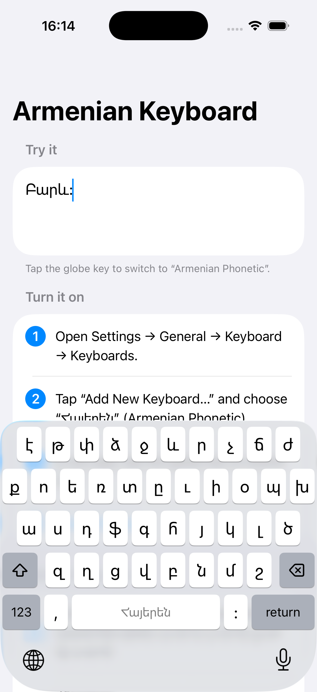

Armenian Keyboard
A free Armenian phonetic keyboard for Mac and iPhone. Letters sit on the English keys that sound the same, and the Armenian punctuation — ։ ՝ ՛ ՞ ՜ « » և — is one key away instead of buried.
The layout
Big: the key on its own · small grey: with Shift · small orange: with Option (Mac), which always types English. Highlighted keys are punctuation. Why each key is where it is →
Punctuation where you expect it
| Mark | What it is | Key |
|---|---|---|
| ։ | Full stop (verjaket) | . — no Shift |
| ՝ | But / pause | ` |
| ՛ | Emphasis | ' |
| ՞ | Question | Shift / |
| ՜ | Exclamation | Shift ` |
| « » | Quotes | Shift , and Shift . |
| և | Yev | 7 (Shift 7 → Եվ) |
Letters follow the Windows “Armenian Phonetic” layout, so if you type Armenian on Windows you already know this one.
Install on a Mac
With the installer
- Download the .pkg and open it. If macOS says it can't check it, open System Settings → Privacy & Security and click Open Anyway.
- Log out and back in.
- System Settings → Keyboard → Text Input → Edit… → +, pick Armenian → Armenian Phonetic Plus.
With one line in Terminal
curl -fsSL https://aram-p.github.io/armenian-keyboard/install.sh | sh
Then log out and back in, and add it in System Settings as on the left. No password needed: it installs for your user only.
iPhone
Same letters in the same places, with a numbers page that puts Armenian punctuation first, ։ next to the space bar, and a double space that ends the sentence with ։.
It does not ask for Full Access and collects nothing.
App Store release is on the way. Developers can build it now from the ios folder.
